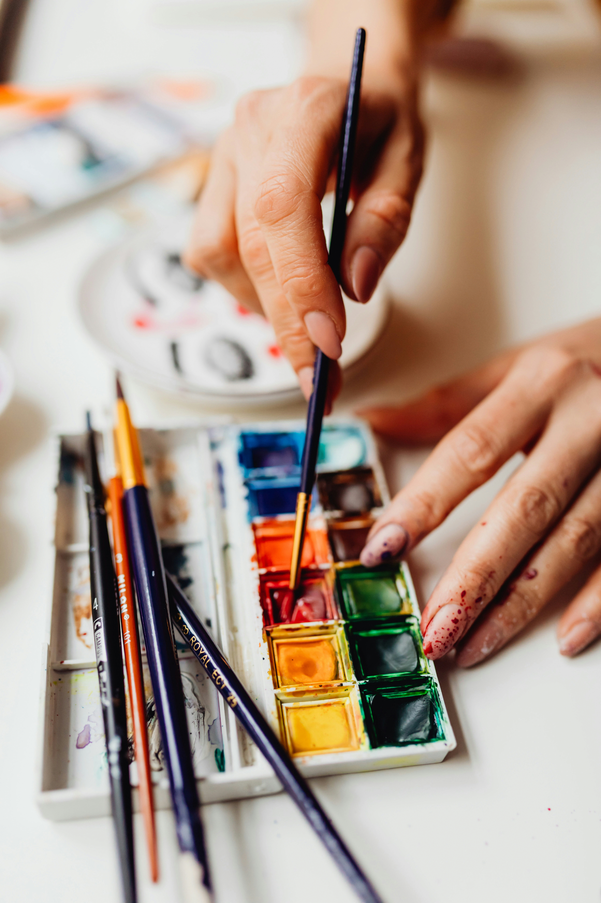
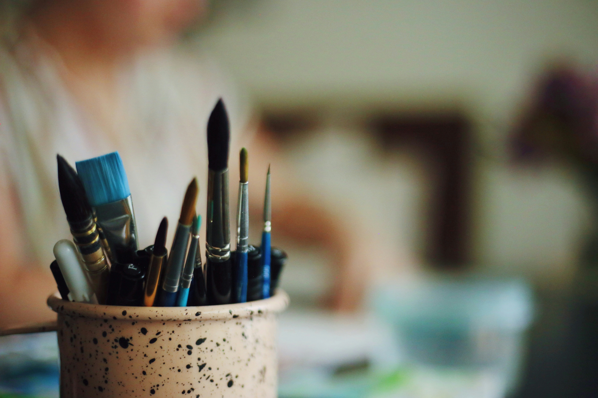

Lille pakke
Nice to have:
En lille sprayflaske med vand, papirlommetørklæder og et par clips. Især rare, når vi tegner udendørs.
Skal du på Trin 2 eller Trin 3, kommer der lidt ekstra materialer på. Dem finder du længere nede på siden.
En palette med akvarelfarver
Brug det, du allerede har, eller vælg et af mine forslag længere nede.
Et par skitsebøger
Fx A5 eller A4. Du kan også tage en akvarelblok i A4 eller større med.
En pensel
Fx størrelse 8-12.
Et par sorte vandfaste tuschpenne
Køkkenrulle
Vi bruger SÅ meget.
Nice to have:
En lille sprayflaske med vand, papirlommetørklæder og et par clips. Især rare, når vi tegner udendørs.
Skal du på Trin 2 eller Trin 3, kommer der lidt ekstra materialer på. Dem finder du længere nede på siden.

Nice to have:
En lille sprayflaske med vand, papirlommetørklæder og et par clips. Især rare, når vi tegner udendørs.
Skal du på Trin 2 eller Trin 3, kommer der lidt ekstra materialer på. Dem finder du længere nede på siden.
Nice to have:
En lille sprayflaske med vand, papirlommetørklæder og et par clips. Især rare, når vi tegner udendørs.
Skal du på Trin 2 eller Trin 3, kommer der lidt ekstra materialer på. Dem finder du længere nede på siden.
Nice to have:
En lille sprayflaske med vand, papirlommetørklæder og et par clips. Især rare, når vi tegner udendørs.
Skal du på Trin 2 eller Trin 3, kommer der lidt ekstra materialer på. Dem finder du længere nede på siden.

Akvarelmaling
En lille palette er genial, fordi den er nem at tage med, og fordi du lærer at blande dine egne farver.
Anbefalede mærker
Pensler
Vælg en pensel der er større end du tror
Vandfast tusch